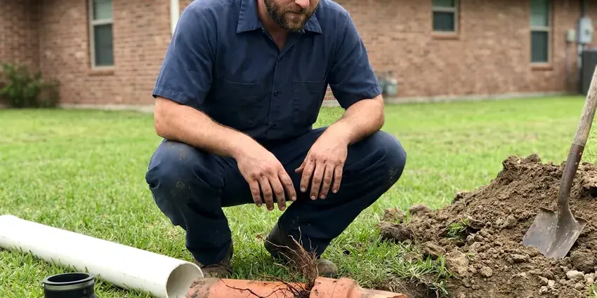

Gas Leak Repair in Ogden, UT
For urgent gas leak repair needs in Ogden, UT, trust BPK Plumbing. Our licensed technicians are ready to secure your property and fix the problem.
- Safety First Approach
- Prompt Emergency Response
- Local Ogden Experts
- Certified Gas Technicians

Dealing with a Gas Leak? Get Help Now in Ogden, UT.
Our team is ready to provide safe and effective gas leak detection and repair services.
Reliable Gas Leak Repair Services for Ogden, UT Homes
BPK Plumbing repairs natural gas and propane leaks in Ogden homes and businesses, from loose fittings at the water heater to corroded steel lines buried in the yard. We isolate each section, pressure test it and repair or replace the failed components.
Our expertise includes:
- Adherence to all Utah plumbing and gas codes.
- Black iron, CSST and polyethylene gas line repair and replacement
- Strict adherence to Utah plumbing and gas codes

Additional Plumbing Repair Services in Ogden, UT
We offer expert plumbing repair services across Ogden, UT to fix leaks, restore flow, and keep your system running smoothly.


Customers
Why Choose BPK Plumbing for Gas Leak Repair in Ogden, UT?
Gas leaks are not just an inconvenience, they pose serious safety risks including fire, explosions and carbon monoxide poisoning. Fast, professional repair is essential.
- Local Experts, Our technicians are highly trained and familiar with the gas line challenges found in Ogden, UT.
- Safety Certified, Our technicians are fully certified and follow strict safety procedures for all gas line work.
- Rapid Response, We offer quick response times to address gas leaks promptly, minimizing risk to your property.
Citywide Coverage
Our licensed gas plumbers cover every neighborhood in Ogden, along with nearby rural properties on propane. Homes, restaurants and small businesses are all served.
Experienced Team
When it comes to gas leak repair, experience matters. The BPK Plumbing team is made up of licensed and insured plumbers with years of focused expertise in the gas line systems common in Ogden, UT.
Safety-First Approach
We take every precaution, from isolating gas lines to thorough post-repair testing, to protect the safety of your property. Our commitment to code compliance protects your home and provides peace of mind after a gas leak repair.
Trusted Certified Ogden Plumbing Services Professionals
At BPK Plumbing, we take pride in providing licensed, certified plumbing services throughout Ogden, UT. Backed by leading industry credentials, our experienced plumbers combine technical skill with genuine customer care. Whether it is repair, installation, or maintenance, we follow strict safety and quality standards to deliver long-lasting results you can trust.
Call Us Now PHCC Plumbing Contractor Recognition
PHCC Plumbing Contractor Recognition Better Business Bureau (BBB) Accreditation
Better Business Bureau (BBB) Accreditation Angi Certified Pro
Angi Certified Pro ISO 9001 Quality Management Certification
ISO 9001 Quality Management CertificationThorough Gas Leak Repair Services in Ogden, UT
Gas Line Repair and Replacement in Ogden, UT
Once a leak is identified, our team will recommend the most effective repair option. This could involve replacing a corroded section of pipe or re-making loose connections. For severely damaged or aged lines, a full gas line replacement might be necessary for long-term safety and compliance with Utah codes. We work with many piping materials, including black iron pipe and flexible corrugated stainless steel tubing, both common in Utah homes.

Residential Gas Leak Detection in Ogden
Detecting a gas leak in your home requires specialized equipment and trained eyes. Our technicians use sensitive gas detectors and pressure testing methods to precisely locate leaks in natural gas lines, propane lines or appliance connections. We check all accessible piping, including lines running to furnaces, water heaters and stoves, so no potential leak goes unnoticed. Early detection is essential to preventing serious hazards and protecting your family.
Emergency Gas Leak Services in Ogden
Gas leaks are emergencies that require urgent attention. BPK Plumbing offers rapid response for urgent gas leak situations across Ogden. If you smell sulfur or rotten eggs, hear a hissing sound or see visible damage to a gas line, leave the building and call us after contacting your gas utility. Our emergency team is equipped to isolate the leak, make the system safe and then perform permanent repairs.
Commercial Gas Leak Repair in Ogden
Businesses in Ogden also rely on safe and functional gas lines for heating, cooking and industrial processes. BPK Plumbing provides complete gas leak detection and repair services for commercial properties. We understand the need for minimal disruption to your operations and work efficiently to resolve gas leaks, protecting the safety of your employees and customers while maintaining business continuity.
Gas Leak Repair Cost Comparison in Ogden, UT
Simple fitting or connector repairs usually cost $150 to $450, including leak testing. Interior pipe repairs often range from $300 to $1,000, depending on access. Underground gas line repairs or replacements commonly run $1,000 to $4,000 based on length and depth. We give you a clear written estimate before starting.
Permitting and Code Compliance in Ogden, UT
Any significant gas line repair or replacement in Ogden, UT typically requires permits and inspections from local authorities. BPK Plumbing handles all required paperwork and makes sure every aspect of the repair meets the requirements of Utah plumbing and gas codes. This commitment to compliance not only supports safety but also helps you avoid issues during future home inspections or sales.
Commercial Gas Leak Services in Ogden
Businesses in Ogden also depend on safe gas systems for heating, cooking and industrial processes. BPK Plumbing provides complete gas leak detection and repair for commercial properties, understanding the complexities of larger gas systems and the need to minimize business interruption. We work quickly and efficiently to resolve commercial gas leaks so your business operations can resume safely and without delay, adhering to all commercial codes.

Residential Gas Line Leak Detection in Ogden
Detecting a gas leak in your home requires care and specialized tools. Our technicians use gas sniffers and pressure testing equipment to precisely locate leaks in buried lines, appliance connections or internal piping. This diagnostic step is essential before any repair work begins, so we address the exact source of the problem without unnecessary disruption to your Ogden property. We are thorough and methodical, putting your family's safety first.
Gas Leak Repair Near Me in Ogden, UT
When you search for 'gas leak repair near me' in Ogden, UT, you want a company that responds quickly and safely. BPK Plumbing is your local solution, offering prompt, expert service right to your doorstep. We pride ourselves on being a dependable partner for all gas plumbing emergencies in the area.
When you need gas leak repair near me, the most important thing is a licensed plumber who follows safety procedures. BPK Plumbing brings detectors, gauges and repair materials on every gas call. We fix the leak and make sure the whole system is tight.
BPK Plumbing at a Glance
- Licensed and insured plumbers serving Ogden, UT
- 24/7 emergency service with same-day scheduling
- Clear written estimates, no hidden fees
- 4.8-star rated by 470+ Utah customers
Ogden Map
Ogden Information
- Population
- 87,267
- Area codes
- 801/385/435
- Service area
- Ogden and communities within 40 miles
- Nearby
- Layton, Salt Lake City, Logan, West Valley City
Higher elevations in and around Ogden bring colder nights and longer winters, which puts extra load on water heaters and heating systems. Ground movement and corrosion can both cause leaks, so keeping gas lines sound is crucial for homes in Ogden, UT and their long-term safety.
Expert Services
Trust our professionals for reliable BPK Plumbing solutions in Ogden, UT.
Our Specialized Plumbing Services in Ogden, UT
At BPK Plumbing, we provide a complete range of plumbing services across Ogden, UT. From leak detection to full system installations, our team ensures fast, precise, and affordable service for both residential and commercial properties. Explore our core services below:


How Our Gas Leak Repair Process Works in Ogden, UT
Here is what happens when you call us for a gas leak repair.
Request a Quote
Call (385) 543-4073 right away if you suspect a gas leak. Our dispatch team will gather essential information and schedule a rapid response for your Ogden location.
Emergency Response
Our licensed technicians arrive promptly, equipped with safety gear and specialized detection tools. We prioritize isolating the leak and making the area safe.
Precise Leak Detection
Using gas sniffers and pressure tests, we precisely pinpoint the source of the gas leak. This allows a targeted and effective repair without guesswork.
Frequently Asked Questions About Gas Leak Repair in Ogden
Small fitting or connector repairs typically cost $150 to $450. Interior line repairs often run $300 to $1,000, and underground line replacements typically range from $1,000 to $4,000. We quote before any work starts.
Leave the home right away, do not use light switches or open flames, and call your gas utility or 911 from outside. After the area is made safe, call us for the fix.
BPK Plumbing stands behind the quality of our gas leak repairs with a comprehensive warranty on parts and labor. The full terms of the warranty will be provided with your service agreement, offering you peace of mind that your repair is durable and reliable for the long term.
The most common sign is the distinctive rotten egg smell, which is added to natural gas for safety. Other signs include a hissing sound near a gas line, dead or discolored vegetation over an underground line, unexplained higher gas bills or physical symptoms like dizziness or nausea. If you notice any of these, call us immediately.
We repair all types of gas lines found in Utah homes and businesses, including black iron pipe, galvanized steel, copper and modern corrugated stainless steel tubing. Our technicians are experienced with various piping materials and connection methods.
The duration of a gas leak repair varies greatly. Simple repairs might take an hour or two, while complex issues involving excavation or extensive pipe replacement could take a full day or more. We aim for prompt service while putting safety and thoroughness first.
For significant gas line repairs or replacements in Utah, particularly those involving altering or adding to the existing system, permits from local building authorities are typically required. BPK Plumbing will handle all required permitting and make sure the work passes all required inspections, in full compliance with local codes.
Yes, a gas leak is always an emergency. Natural gas is very flammable and can lead to fires, explosions or carbon monoxide poisoning. If you suspect a gas leak, evacuate everyone out of the building, call 911 from a safe distance and then contact BPK Plumbing for immediate repair.
What People Are Saying About Our Plumbing Experts?

Daniel K.
A pipe burst at 11 pm and they actually answered. The plumber showed up within the hour, shut everything down, and had us back to normal the next morning. Could not ask for more.
Emergency Plumbing · Layton, UT
James P.
Our commercial plumbing system had a leak under the sink, and BPK Plumbing handled it professionally. The plumbers arrived quickly and restored everything without disruption to our customers.
Commercial Plumbing · West Valley City, UT
Patricia H.
We had a slab leak that two other companies could not find. BPK Plumbing located it in under an hour, explained our options, and the price matched the quote to the dollar.
Slab Leak Repair · West Valley City, UT
Mark T.
When our office needed drain cleaning, BPK Plumbing provided quick, reliable service. The plumber arrived on time and made sure every drain flowed perfectly before leaving. Very satisfied.
Drain Cleaning · Layton, UTRobert G.
The trenchless sewer replacement saved our front yard. They walked us through the camera inspection footage first so we knew exactly what we were paying for.
Sewer Line Replacement · Ogden, UT
Emily R.
I called BPK Plumbing for plumbing repair, and the technician was fast, polite, and thorough. They explained the problem clearly and fixed it the same day. I will definitely hire them again. Highly recommended!
Plumbing Repair · Millcreek, UT